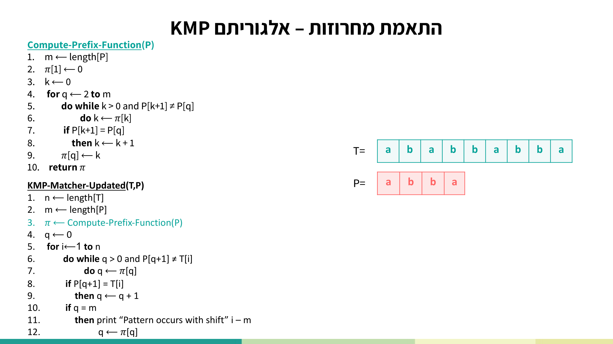
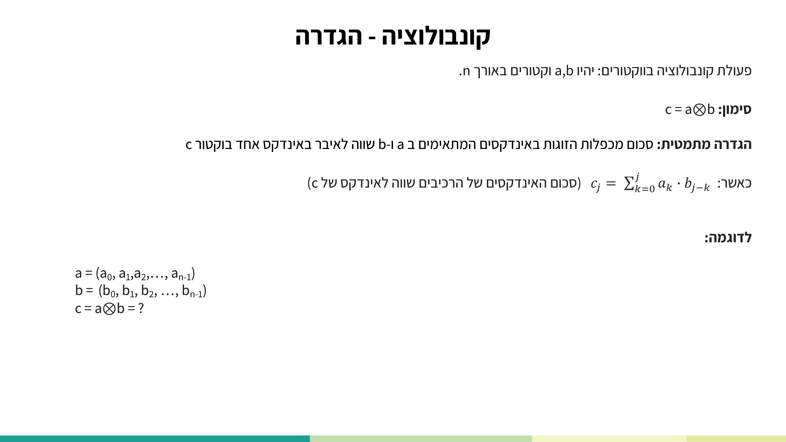
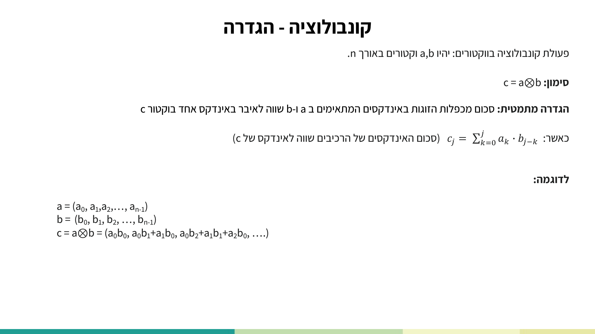
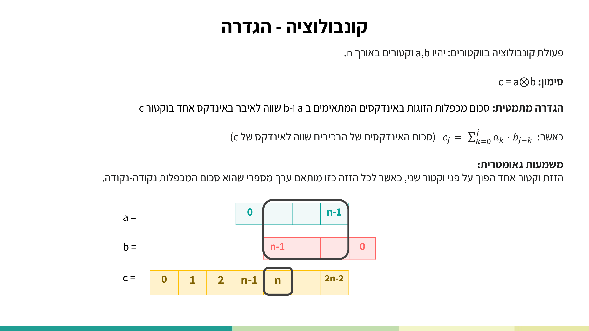
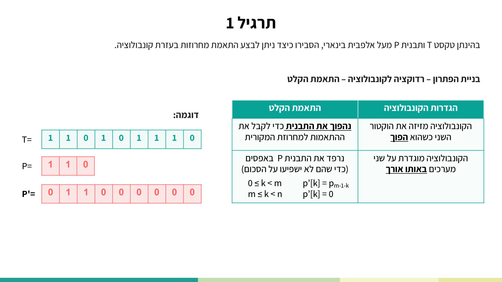
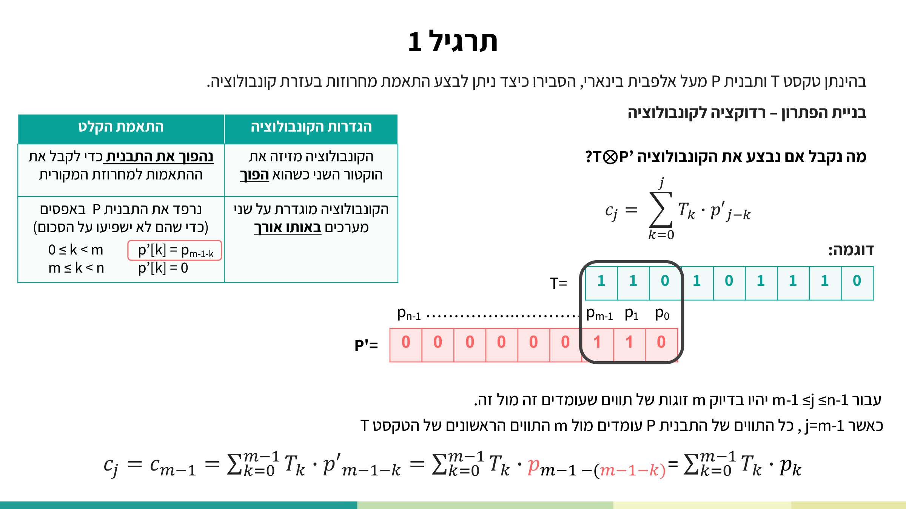
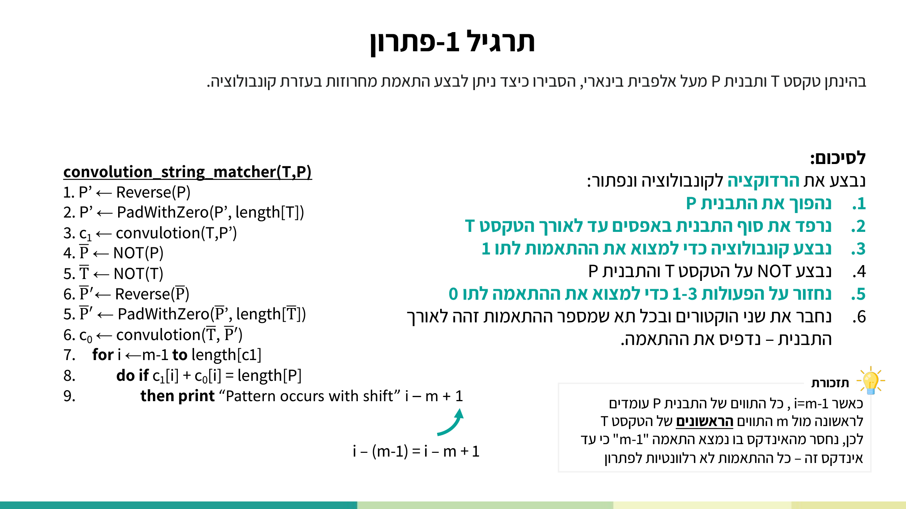
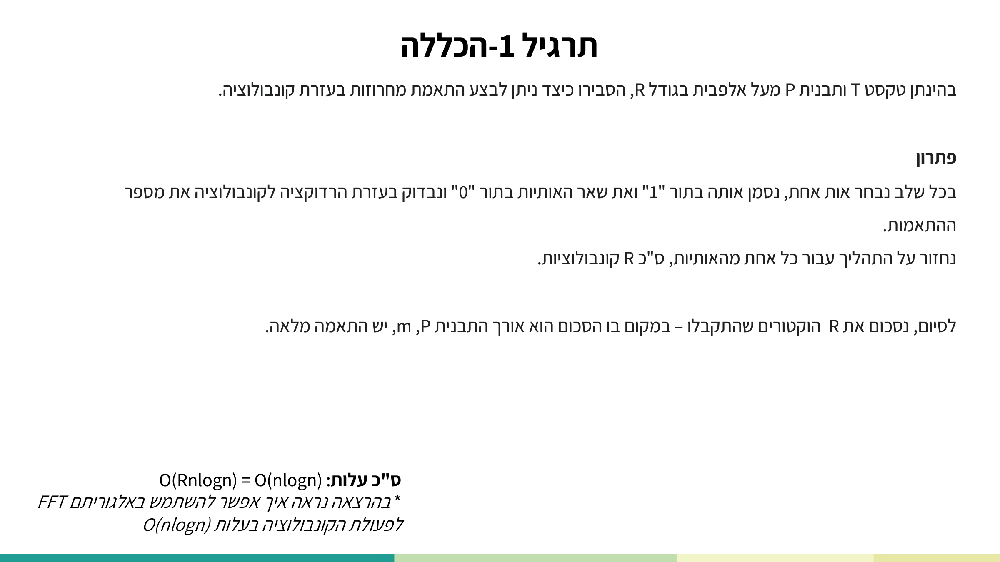

התאמת מחרוזות בעזרת קונבולוציה
⏱ זמן משוער: 55 דק'
0. האינטואיציה — למה בכלל קונבולוציה?
בעיית התאמת המחרוזות מבקשת למצוא את כל ההזזות החוקיות של תבנית P בתוך טקסט T. במודול הקודם ראינו פתרונות "ישירים": האלגוריתם הנאיבי, Rabin-Karp, ו-KMP. כאן אנחנו מסתכלים על אותה בעיה מזווית חדשה לגמרי — רדוקציה לפעולה אלגברית אחת: קונבולוציה של שני וקטורים.
התובנה שמניעה את כל המודול פשוטה: בהתאמת מחרוזות אנחנו מזיזים את התבנית לאורך הטקסט, ובכל הזזה מעמידים m תווים של התבנית מול m תווים של הטקסט וסופרים כמה מהם מתאימים. מסתבר שזו בדיוק הפעולה שקונבולוציה מבצעת — היא מחליקה וקטור אחד (הפוך) על פני השני, ולכל הזזה מחשבת סכום של מכפלות נקודה-נקודה. אם נקודד נכון את הטקסט ואת התבנית לווקטורים, כל ערך בווקטור הקונבולוציה יספור בדיוק את מספר ההתאמות בהזזה המתאימה.
🎓 הרחבה — חזרה קצרה על KMP (הרקע מהמודול הקודם)
ההרצאה נפתחת בחזרה קצרה על KMP לפני שהיא עוברת לחומר החדש (הקונבולוציה). התוכן הזה נלמד במלואו במודול הקודם — הנה שני הפסאודו-קודים כפי שהופיעו בשקף, לרענון בלבד:
KMP-Matcher-Updated(T,P) 1. n ← length[T] 2. m ← length[P] 3. π ← Compute-Prefix-Function(P) 4. q ← 0 5. for i←1 to n 6. do while q > 0 and P[q+1] ≠ T[i] 7. do q ← π[q] 8. if P[q+1] = T[i] 9. then q ← q + 1 10. if q = m 11. then print "Pattern occurs with shift" i – m 12. q ← π[q]
Compute-Prefix-Function(P) 1. m ← length[P] 2. π[1] ← 0 3. k ← 0 4. for q ← 2 to m 5. do while k > 0 and P[k+1] ≠ P[q] 6. do k ← π[k] 7. if P[k+1] = P[q] 8. then k ← k + 1 9. π[q] ← k 10. return π
KMP רץ בזמן Θ(n+m) באמצעות פונקציית הקידומת π. שיטת הקונבולוציה שנלמד כאן איטית יותר (O(n log n)), אבל היא ממחישה רדוקציה יפהפייה ומהווה גשר ישיר למודול ה-FFT הבא.

מקור: lec-fft-string-matching-convolution.pdf (עמ' 2–4)
1. הגדרת הקונבולוציה
יהיו a ו-b שני וקטורים באורך n. פעולת הקונבולוציה ביניהם מסומנת בקורס בעיגול עם X בתוכו:
c = a ⊗ b
ההגדרה המתמטית: כל איבר של וקטור התוצאה c הוא סכום של מכפלות זוגות איברים מ-a ומ-b, כך שסכום האינדקסים של כל זוג שווה לאינדקס של האיבר ב-c:
cj = Σk=0j ak · bj−k
כלומר האינדקסים k ו-j−k של האיברים המוכפלים מסתכמים תמיד ל-j, האינדקס של האיבר המתקבל ב-c. אם נפתח את השורות הראשונות נקבל:
a = (a₀, a₁, a₂, …, a_{n-1})
b = (b₀, b₁, b₂, …, b_{n-1})
c = a⊗b = ( a₀b₀ , a₀b₁+a₁b₀ , a₀b₂+a₁b₁+a₂b₀ , … )
c₀ = a₀b₀
c₁ = a₀b₁ + a₁b₀
c₂ = a₀b₂ + a₁b₁ + a₂b₀
…


מקור: lec-fft-string-matching-convolution.pdf (עמ' 36–37)
2. המשמעות הגאומטרית — הזזת וקטור הפוך
מאחורי הנוסחה היבשה מסתתרת תמונה גאומטרית ברורה: הקונבולוציה היא "הזזת וקטור אחד הפוך על פני וקטור שני, כאשר לכל הזזה מותאם ערך מספרי שהוא סכום המכפלות נקודה-נקודה". השקף מצייר את a (אינדקסים 0..n−1), ומתחתיו את b הפוך (האינדקס n−1 משמאל, 0 מימין), ואת וקטור התוצאה c באורך 2n−1 (אינדקסים 0..2n−2).
מחליקים את b ההפוך מתחת ל-a: בכל הזזה, האיבר המתאים ב-c הוא סכום המכפלות של האיברים החופפים. בהתחלה חופף איבר בודד (c₀ = מכפלה אחת), אחריו שניים (c₁), אחר כך שלושה, וכן הלאה עד לחפיפה מלאה באמצע, ואז החפיפה מצטמצמת בחזרה עד למכפלה בודדת ב-c2n−2.

מקור: lec-fft-string-matching-convolution.pdf (עמ' 39–45)
3. הרדוקציה — התאמת הקלט (Reverse + Padding)
הניסוח (תרגיל 1): "בהינתן טקסט T ותבנית P מעל אלפבית בינארי, הסבירו כיצד ניתן לבצע התאמת מחרוזות בעזרת קונבולוציה." הרעיון: אם נתייחס לטקסט ולתבנית כאל שני וקטורים, אז הקונבולוציה T⊗P ממילא מזיזה את התבנית לאורך הטקסט ובכל שלב מעמידה את m תווי התבנית מול m תווי טקסט. נותר רק "ליישר" את הקלט כדי שהמספרים שיוצאים יהיו ספירת התאמות.
כדי להשתמש בקונבולוציה, צריך שני תיקונים לקלט:
| הגדרת הקונבולוציה | התיקון בקלט |
|---|---|
| הקונבולוציה מזיזה את הווקטור השני כשהוא הפוך. | נהפוך את התבנית — P' = Reverse(P). ההיפוך "מבטל" את ההיפוך של הקונבולוציה ומחזיר את סדר ההתאמה המקורי. בדוגמה: P=110 → 011. |
| הקונבולוציה מוגדרת על שני מערכים באותו אורך. | נשווה אורכים ב-ריפוד באפסים (PadWithZero) עד לאורך הטקסט. האפסים לא משפיעים על הסכום. |
נוסחת בניית P' (התבנית ההפוכה והמרופדת) עבור וקטור באורך n:
for 0 ≤ k < m : p'[k] = p_{m-1-k} (התבנית ההפוכה)
for m ≤ k < n : p'[k] = 0 (ריפוד באפסים)
דוגמת ההרצאה שנלווה לאורך כל המודול: T = 1 1 0 1 0 1 1 1 0 (n=9), P = 1 1 0 (m=3). לאחר היפוך וריפוד מקבלים P' = 0 0 0 0 0 0 1 1 0 — התבנית ההפוכה יושבת בקצה (באינדקסים הנמוכים) וכל השאר אפסים.

מקור: lec-fft-string-matching-convolution.pdf (עמ' 46–51)
4. למה ההיפוך "מתבטל" — הגזירה של cm−1
נבצע את הקונבולוציה c = T⊗P'. לפי ההגדרה, cj = Σk=0j Tk · p'j−k. עבור m−1 ≤ j ≤ n−1 יש בדיוק m זוגות תווים שעומדים זה מול זה — כלומר כל m תווי התבנית חופפים ל-m תווי טקסט. נבחן את הרגע הראשון הזה, j = m−1, שבו כל תווי התבנית עומדים מול m התווים הראשונים של הטקסט:
cm−1 = Σk=0m−1 Tk · p'm−1−k = Σk=0m−1 Tk · pm−1−(m−1−k) = Σk=0m−1 Tk · pk
ההיפוך ב-P' וההיפוך שהקונבולוציה מבצעת ביטלו זה את זה, ומה שנשאר הוא Σ Tk·pk — סכום המכפלות של הטקסט מול התבנית בסדר המקורי. מכיוון שהתווים בינאריים (0/1), מכפלה Tk·pk שווה 1 בדיוק כאשר שניהם '1'. לכן:

מקור: lec-fft-string-matching-convolution.pdf (עמ' 52–53)
5. הטרייס — חישוב c על דוגמת ההרצאה
נחזור לדוגמה: T = 110101110, P' = 000000110. מחשבים את c איבר-איבר לפי הנוסחה, ומקבלים:
index i : 0 1 2 3 4 5 6 7 8
c : 0 1 2 1 1 1 0 2 2
└──────── רלוונטי: m-1=2 .. n-1=8 ────────┘
התאים הרלוונטיים הם האינדקסים 2..8 (מ-m−1 עד n−1); התאים 0..1 אינם הזזות מלאות ולכן אינם רלוונטיים. כל ci בטווח הזה מונה כמה תווי '1' של התבנית מתאימים בהזזה i.

מקור: lec-fft-string-matching-convolution.pdf (עמ' 54–62)
6. ספירת התו '0' והתנאי להתאמה מלאה
הקונבולוציה c₁ = T⊗P' ספרה רק את התאמות ה-'1' — כי מכפלה שווה 1 רק כשגם הטקסט וגם התבנית נושאים '1'. אבל התאמה מלאה בהזזה דורשת שגם ה-'0'-ים יעמדו זה מול זה. איך סופרים את התאמות ה-'0'?
התשובה: "נבצע פעולת NOT על הקלט והתבנית ונבצע מחדש את הקונבולוציה." כלומר מחשבים T̄ = NOT(T), P̄ = NOT(P), ומריצים קונבולוציה שנייה c₀ = T̄ ⊗ Reverse-and-pad(P̄). עכשיו כל '0' מקורי הפך ל-'1', ולכן c₀[i] מונה את מספר התאמות ה-'0' בהזזה i.
בדוגמה שלנו, בהזזה שבה c₁[i]+c₀[i]=3=m נמצאה התאמה מלאה של P=110 בטקסט.
מקור: lec-fft-string-matching-convolution.pdf (עמ' 62–63)
7. הפסאודו-קוד המלא וניתוח העלות
נאסוף את הכול לאלגוריתם אחד. זהו פסאודו-הקוד של ההרצאה, גרסת O(n log n) — מילה במילה כפי שמופיע בשקף (כולל שגיאת המספור החוזרת 5,6 והכתיב convulotion):
convolution_string_matcher(T,P) 1. P' ← Reverse(P) 2. P' ← PadWithZero(P', length[T]) 3. c₁ ← convulotion(T,P') 4. P̄ ← NOT(P) 5. T̄ ← NOT(T) 6. P̄' ← Reverse(P̄) 5. P̄' ← PadWithZero(P̄', length[T̄]) 6. c₀ ← convulotion(T̄, P̄') 7. for i ←m-1 to length[c1] 8. do if c₁[i] + c₀[i] = length[P] 9. then print "Pattern occurs with shift" i – m + 1
הסבר שורה-שורה:
- שורות 1–2: בונים את P' — הופכים את התבנית ומרפדים באפסים עד לאורך הטקסט.
- שורה 3: קונבולוציה ראשונה c₁ = T⊗P' — סופרת את התאמות ה-'1' בכל הזזה.
- שורות 4–5: מחשבים את המשלימים P̄=NOT(P) ו-T̄=NOT(T).
- שורות 6, 5(שני), 6(שני): בונים את P̄' (היפוך + ריפוד של המשלים) ומריצים קונבולוציה שנייה c₀ = T̄⊗P̄' — סופרת את התאמות ה-'0'.
- שורות 7–9: עוברים על התאים הרלוונטיים i = m−1 … length[c₁], ובכל תא שבו c₁[i]+c₀[i]=m מדפיסים את ההזזה i − m + 1 (מפחיתים m−1 מהאינדקס כי עד שם ההתאמות אינן חוקיות).
ניתוח העלות (שורה-שורה)
| שורה | פעולה | עלות |
|---|---|---|
| 2 | PadWithZero | O(n) |
| 3 | convulotion(T,P') | O(n log n) ⋆ |
| 4 | NOT(P) | O(m) |
| 5 | NOT(T) | O(n) |
| 6 | Reverse(P̄) | O(m) |
| 5⁽²⁾ | PadWithZero | O(n) |
| 6⁽²⁾ | convulotion(T̄,P̄') | O(n log n) ⋆ |
| 7 | for | Θ(n) |
מקור: lec-fft-string-matching-convolution.pdf (עמ' 63–64)
8. הכללה לאלפבית בגודל R
הניסוח: "בהינתן טקסט T ותבנית P מעל אלפבית בגודל R, הסבירו כיצד ניתן לבצע התאמת מחרוזות בעזרת קונבולוציה." הרעיון מרחיב את הטריק הבינארי:
בכל שלב נבחר אות אחת, נסמן אותה בתור "1" ואת שאר האותיות בתור "0" ונבדוק בעזרת הרדוקציה לקונבולוציה את מספר ההתאמות. נחזור על התהליך עבור כל אחת מהאותיות, ס"כ R קונבולוציות. לסיום, נסכום את R הווקטורים שהתקבלו — במקום בו הסכום הוא אורך התבנית P, m, יש התאמה מלאה.
זהו בדיוק אותו רעיון של המקרה הבינארי (שם היו R=2 אותיות: '1' ו-'0', ולכן שתי קונבולוציות), רק שכעת מבצעים אחת לכל אות באלפבית.

🎓 הרחבה — לא נדרש למבחן: מה עם wildcards?
כותרת המשימה של הקלאסטר מזכירה "התאמה עם/בלי wildcards", אך בשקפים אלה wildcards אינם נלמדים במפורש. ההרצאה עוסקת בהתאמה מדויקת מעל אלפבית בינארי, בהכללה לאלפבית בגודל R, ובספירת אי-התאמות (בתרגיל הבית). ייתכן שטיפול מלא ב-wildcards נלמד במסגרת אחרת. נזכיר את האינטואיציה בלבד: אם מקודדים wildcard כתו ש"מתאים לכולם" (למשל 0 בשני הווקטורים כך שהמכפלה תמיד 0 ואינה פוסלת התאמה), ניתן להרחיב את הרדוקציה — אך זו העשרה ולא חלק מחומר השקפים.
מקור: lec-fft-string-matching-convolution.pdf (עמ' 65–66)
9. תרגיל הקורס — התאמת מחרוזות וכפל פולינומים
הורדות: שאלת הבית (hw-string-matching-convolution.pdf) · הפתרון המלא (sol-hw-string-matching-convolution.pdf).

שאלה 1 — ספירת אי-התאמות (מילה במילה מהמקור)
בהנתן טקסט T ותבנית P מעל א"ב בינארי, הסבירו כיצד ניתן בעזרת קונבולוציה לספור כמה אותיות לא מתאימות יש בין הטקסט לתבנית בכל הזזה. נמקו תשובתכם!
דוגמא — (מספר התווים הלא מתאימים בהזזה i = C[i]):
i = 1 2 3 4 5 6 7 8 9 10 T = 1 1 0 1 0 0 1 1 1 1 P = 1 1 0 C[0] = 0 C[4] = 3 C[7] = 1
(בטקסט הפתרון הקטע 001 מודגש בהזזה 4: 1 1 0 1 [0 0 1] 1 1 1.)
שאלה 2 — שיפור העלות ל-O(n log m) (מילה במילה מהמקור)
הסבירו כיצד ניתן לשפר את עלות התאמת מחרוזות בעזרת קונבולוציה מ-O(n log n) ל-O(n log m).
בהצלחה!
פתרון שאלה 1 (מילה במילה מהמקור)

בתרגול ראינו אלגוריתם הסוכם את מספר האותיות הזהות שבין התבנית למחרוזת בכל הזזה, לכן אם נפחית מספר זה מ-m (גודל התבנית), נקבל את מספר האותיות הלא זהות.
convolution_string_unmatcher(T,P) 1. P' ← Reverse(P) 2. P' ← PadWithZero(P', length[T]) 3. c₁ ← convulotion(T,P') 4. P̄ ← NOT(P) 5. T̄ ← NOT(T) 6. P̄' ← Reverse(P̄) 5. P̄' ← PadWithZero(P̄', length[T̄]) 6. c₀ ← convulotion(T̄, P̄') 7. for i ←m-1 to length[c₁] 8. do print "c[i-m+1]=m - c₁[i] - c₂[i]"
נכונות: בהינתן טקסט T ותבנית P מעל א"ב בינארי, נראה שהפעלת האלגוריתם תדפיס את מספר אי ההתאמות בין הטקסט לתבנית באמצעות קונבולוציה. הוכחנו בתרגול את הרדוקציה מבעיית התאמת המחרוזות לקונבולוציה. נרצה להראות שהשינויים שביצענו באלגוריתם שהוכחנו בכיתה, ידפיסו כמה אותיות לא מתאימות יש בין הטקסט לתבנית בכל הזזה. באלגוריתם המקורי, חישבנו את מספר ההתאמות בין התבנית לטקסט — לכן, אם נחסיר מספר זה מגודל התבנית m, נקבל את מספר אי ההתאמות בין התבנית לטקסט. עלות: O(n log n) — ניתן לבצע את הקונבולוציה באמצעות FFT בעלות זו.
הסבר מודרך: הגוף של האלגוריתם זהה לחלוטין ל-convolution_string_matcher של ההרצאה — אותן שתי קונבולוציות שמפיקות את c₁ (התאמות '1') ואת c₀ (התאמות '0'). השינוי היחיד הוא בשורה 8: במקום לבדוק אם סכום ההתאמות שווה ל-m, מדפיסים ישירות את מספר אי-ההתאמות בהזזה, שהוא m − (c₁[i] + c₀[i]) = מספר התווים שלא תאמו. (הערה: בשקף הודפס c₂[i] בעוד שהוגדר c₀ — אי-התאמה בסימון שנשמרה מילה במילה; הכוונה לווקטור התאמות ה-'0'.)
פתרון שאלה 2 (מילה במילה מהמקור)

נבצע את הרדוקציה לקונבולוציה שראינו בתרגול עם שינויים קלים:
1. נחלק את הטקסט של n ל-n/2m חלקים באורך 2m כל אחד עם חפיפה של m בין חלק לחלק.
2. עבור כל חלק נפעיל את הרדוקציה לקונבולוציה שראינו בתרגול (תוכן הלולאה באלגוריתם המצורף) O(m log m).
convolution_string_matcher(T,P) 1. P' ← Reverse(P) 2. m ← length[P] 3. P' ← PadWithZero(P', length[2m]) 4. T_index ← 0 5. while T_index + 2m <= length[T] 6. do 7. c₁ ← convulotion(T[T_index+2m],P') 8. P̄ ← NOT(P) 9. T̄ ← NOT(T[T_index+2m]) 10. P̄' ← Reverse(P̄) 11. P̄' ← PadWithZero(P̄', length[T̄]) 12. c₀ ← convulotion(T̄, P̄') 13. for i ←m-1 to length[c1] 14. do if c₁[i] + c₀[i] = length[P] 15. then print "Pattern occurs with shift" T_index + i – m + 1 16. T_index ← T_index + m
נכונות: נראה שהפעלת האלגוריתם תשפר את זמן הריצה לסיבוכיות הרצויה מבלי לפגוע בנכונות האלגוריתם. נבצע n/2m פעמים את הקונבולוציה שהוכחה בתרגול על חלקים בגודל 2m עם חפיפה של m כדי לאפשר לקונבולוציה לבצע הזזות גם בנקודות החיתוך בין החלקים; לכל הזזה של התבנית מול הטקסט יש קונבולוציה שביצעה באופן מלא את כל זוגות המכפלות המתאימות ויש סכום שמייצג את התוצאה בוקטור התוצאה c.
עלות: O(n/m · m log m) = O(n log m).
הסבר מודרך: הרעיון הוא ש-FFT על וקטור באורך n עולה O(n log n), אבל אם נעבוד על חלונות קטנים באורך 2m בלבד, כל קונבולוציה עולה רק O(m log m). מחלקים את הטקסט ל-n/m חלונות בגודל 2m עם חפיפה של m — החפיפה הכרחית כדי לא לפספס הזזות שנופלות על התפר בין חלון לחלון (התבנית באורך m חייבת להיכנס בשלמותה לפחות בחלון אחד). סה"כ: (n/m) · O(m log m) = O(n log m). (שוב נשמרו שגיאות המספור והכתיב convulotion כפי שבשקף.)
מקור: hw-string-matching-convolution.pdf (עמ' 1), sol-hw-string-matching-convolution.pdf (עמ' 1–2)
10. בדיקה עצמית
בדוגמת ההרצאה (T=110101110, P=110) הטרייס נותן c=[0,1,2,1,1,1,0,2,2]. מהו מספר ההתאמות של התו '1' בהזזה i=2 (האינדקס הראשון הרלוונטי, m−1=2)?
מדוע ברדוקציה הופכים את התבנית (P' = Reverse(P)) לפני הקונבולוציה?
מעל אלפבית בינארי, כיצד קובעים שיש התאמה מלאה של התבנית בהזזה i?
מהי סיבוכיות הזמן של convolution_string_matcher (גרסת ההרצאה), ומדוע?